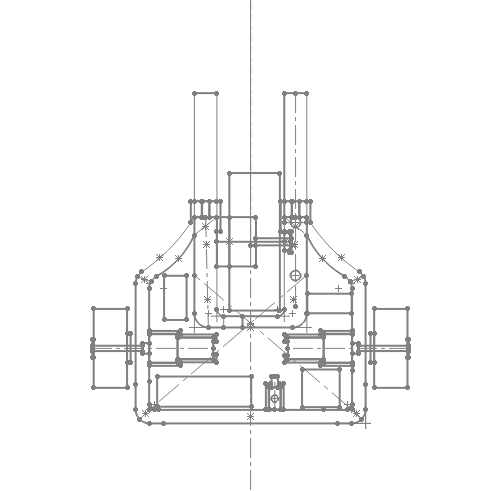
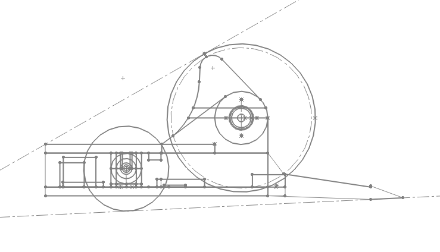
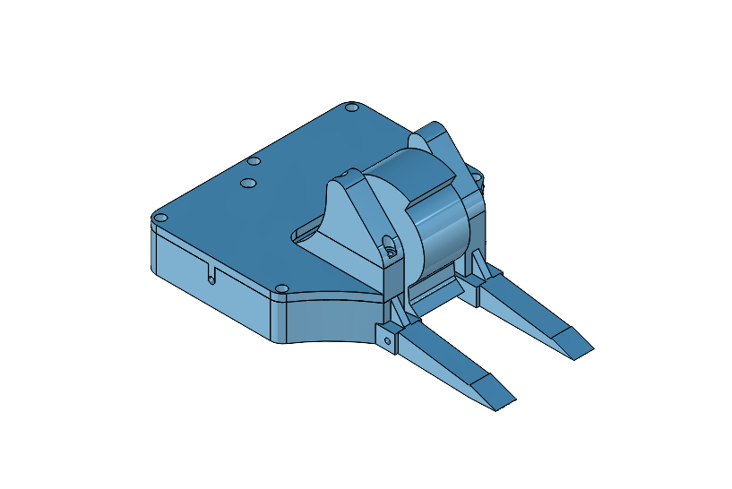
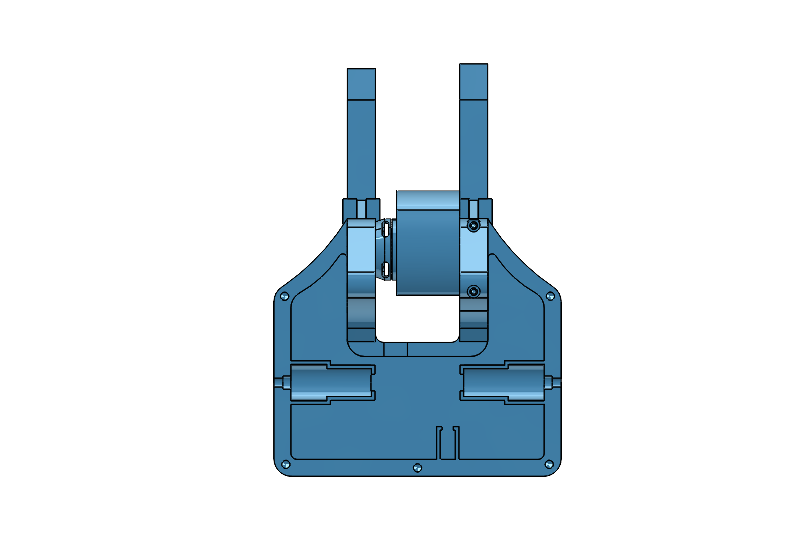

Lil Uzi Vertical
Compact vertical spinner designed for impact stability

Compact vertical spinner designed for impact stability
The design prioritizes stability over reach by reducing footprint and concentrating mass toward the center. This minimizes displacement during impacts and allows faster re-engagement after collisions.


Master sketch defines overall footprint, weapon diameter, and component placement constraints across multiple planes before detailed part modeling.


Parts were designed for tight packaging and load paths under impact. The final assembly reflects centralized mass distribution and minimal overhang to reduce knockback.
The vertical spinner uses a brushless motor to achieve high rotational speed. Tip speed was estimated using motor KV and battery voltage:
Tip Speed ≈ π × Diameter × RPM
With a 3.2 inch diameter and a 2300 KV motor at 11.1V, the theoretical tip speed is approximately 240 mph. Actual speed is lower under load.
A smaller diameter was selected to improve spin-up time and control, trading peak energy for faster engagement and consistency.